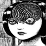
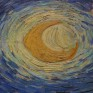
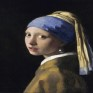

Estilo mangá

O “mangá”(figura-1) é como se define o quadrinho Japonês e também seu estilo de desenho. Quando o mangá se apresenta na forma de desenho animado, é chamado de “anime” (figura-2), palavra que deriva do termo em inglês para “animação”, “animation”.
O surgimento dos mangás, ou dos quadrinhos no Japão, tem estreita relação com a influência dos quadrinhos ocidentais. No entanto, há também uma ligação entre os quadrinhos japoneses com a arte seqüencial japonesa, ao longo dos séculos, que mescla e incorpora elementos da cultura antiga japonesa nos “mangás” atuais, conforme já apresentado no livro “mangá o poder dos quadrinhos japoneses”, da autora Sonya bibe Luyten, a principal fonte de pesquisa para este trabalho.
Estilo van gogh

- Na década de 1880, após receber uma significativa influência da Escola de Haia, começou a elaborar uma série de trabalhos, utilizando técnicas de jogos de luzes. Neste período, suas telas retratavam a vida cotidiana dos camponeses e os trabalhadores na zona rural da Holanda.
- Imprimiu emoção em suas pinturas.
- Presença de pinceladas sinuosas.
- Transmissão de sentimentos e movimentos nas obras.
Estilo Realisata

Conhecida como a “Mona Lisa do Norte”, esta pintura representa o melhor da arte holandesa. Também envolta em mistério (muito parecido com a obra de Leonardo da Vinci), ela se tornou uma das pinturas mais amadas da história da arte.
A garota com brinco de pérola demonstra as técnicas avançadas de pintura que Vermeer possuía – especificamente sua abordagem à luz, cores e pinceladas.